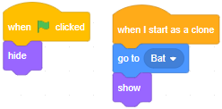

Introduction
Bats hunt their prey using 'echolocation'. They call out, listen to the echoes of those calls, and use those echoes to locate their prey.
Let's see how hard it is to escape a bat, hunting us with echolocation.
Bat
Start from an empty Scratch project (rpf.io/scratch-new — remember to delete the cat sprite).
Paint a black backdrop.
Add the Bat sprite. Change its size to 50.
Notice how its direction is 90, so it should be pointing to the right, but it's actually pointing straight up. Click on the costume tab, click Ctrl + A to select everything, then use the 'turning handle' (at the bottom of the selection) to turn the Bat so it's pointing right.
Tip: Hold down the shift key while you rotate, to snap the rotation to the nearest 45 degrees.
Our Bat is going to call out every half second, which will create soundwaves that spread out like the ripples on the surface of a pond. How could we visualize an expanding soundwave circle in Scratch?
Paint a new sprite, naming it Soundwave. Zoom in until you can draw a circle about the size of four chequered squares.
Tip: Hold down the Shift key while you draw your circle, to ensure it's perfectly circular.
Give it a transparent fill colour and a red outline. It needs to be very thin, even when expanded, so set its thickness to 0.1. Make sure it's centred:
Switch to the Code tab, and add the usual hide-template-show-clone blocks.
Later on, the Bat will move, and the Soundwave should always come from where the Bat is, so make sure that newly created clones begin at the Bat's position.
Does your code look like this?
Newly created soundwaves should repeatedly increase in size, but also get fainter:
What will be the value of the ghost effect by the end of this repeat-loop?
Switch to the Bat sprite's code area. When the green flag is clicked we want to position the Bat in the centre, pointing to the right, and let it create a Soundwave every 0.5 seconds:
Click the green flag. What happens?
Good. Time for an echo.
Echo
Add the 'Butterfly 1' sprite. Change its size to 30, and drag it into some empty space on the stage:
No, because they're day-flying insects, but they do eat moths (which fly at night). Sadly, Scratch doesn't (yet) have a moth sprite, so we'll use a butterfly for now.
Duplicate the Soundwave sprite, naming it Echo.
Change the outline colour of the Echo to green.
When we duplicate a sprite, we don't just duplicate the costumes, we also duplicate the code blocks too. Do you see how the Echo sprite's code area contains the same code blocks as the Soundwave sprite's code area?
An Echo should always come from where the Butterfly is, not where the Bat is. So, double-checking that you're in the Echo sprite's code area, ensure that newly created Echo clones begin at the Butterfly's position:

When should Echo clones be created?
Switch to Butterfly 1's code area. When the green flag is clicked it should forever check to see if it's touching a Soundwave and, if it is, it should create an Echo:
Click the green flag. What happens?
We want a single soundwave to create a single echo wave — why are we getting so many echo waves for each soundwave?
To create a single echo wave, we will use a variable to track when a soundwave starts touching the Butterfly, and when it stops touching the Butterfly. We will only create an echo when it starts touching the Butterfly, not on every frame when it's touching the Butterfly.
Select the Butterfly 1 sprite. Create a variable called touching (for this sprite only).
When the green flag is clicked, set touching to 'false'.
Replace the 'if block' with an 'if-else block'. If we're touching Soundwave, set touching to 'true', else to 'false'.
Just before we set touching to 'true', if it's false, we know the Soundwave has just hit the Butterfly. Add an if touching = false here, and nest the create clone of Echo inside:
Click the green flag. What happens?
Let's make our Butterfly fly.
Doppler effect
Add some code to move your Butterfly right, left, up and down, in response to those arrow keys being pressed:
If you fly away from the Bat, you should notice that the echo waves are further apart, and if you fly towards it, you should notice that they are closer together. This is called the 'Doppler effect'.
When sound waves are close together, they make a...
When something noisy moves quickly towards you, the sound waves get 'squished' closer together, and the noise seems high-pitched; when it moves away from you, they get 'spread out' and the noise seems low-pitched.
Next time a fast car drives past you, listen to the pitch of its engine — it should seem high while it's travelling towards you, then low while it's travelling away.
Now, time for the Bat to hunt us.
Hunting
When our Bat hears the Echo coming back from the Butterfly, it will move towards the source of that Echo.
It would be nice to use a point towards Echo, but remember — that would make the Bat point towards the template... we want it to point towards the clone.
Instead:
- Select the Echo sprite and, inside the repeat-loop, add an if touching Bat ? then block.
- Create an X and a Y variable (for all sprites) to hold the x and y position of the clone.
- Inside the if-block, set X and Y to the clone's x and y position, then broadcast a message called 'Heard echo'.
Grab a broadcast message1 from the 'Events' section.
Click on 'message1' then click 'New message':
Enter 'Heard echo' and click 'OK':
In Scratch, when a message is broadcast, every sprite — and every clone of every sprite — receives that message. This is how one sprite can affect another sprite: the first sprite can broadcast a message, the second sprite can run some code when it receives that message.
Does your code look like this?
It would be nice if we could just add a block to the Bat sprite such that, when it received 'Heard echo', it would point towards the X and Y positions we have stored in our variables. Sadly Scratch doesn't (yet) support that.
We could use something called 'trigonometry', which older kids will know about, to work out the direction to point in. But there's an easier way — create an invisible sprite, position it using X and Y, then point towards that invisible sprite.
So, paint a new sprite, naming it 'Source'. There's no need to draw any costume for it, since we want it to be invisible!
Inside Source's code area, add some code that positions the sprite at the source of the echo, then broadcasts an event called 'Source positioned':
Now select the Bat sprite, and and some code that points the Bat towards the Source:
Click the green flag, and move the Butterfly around the Bat. Does the Bat turn to face it?
Good. Now, add some code so that the Bat flies forwards, let's say 1 step at a time. Also, if it touches the Butterfly, stop all scripts — it's game over:
Click the full screen button, click the green flag, and see how long you can escape the Bat.
Remember: the Bat can't see you — it is hunting you purely by turning towards the echoes you reflect back to it.
Next steps
Save your game. See if you can make it better.
Can you survive even if the Bat is faster than you?
What ideas can you come up with?
What did you think of this module?
I didn't like it

It was OK

I loved it